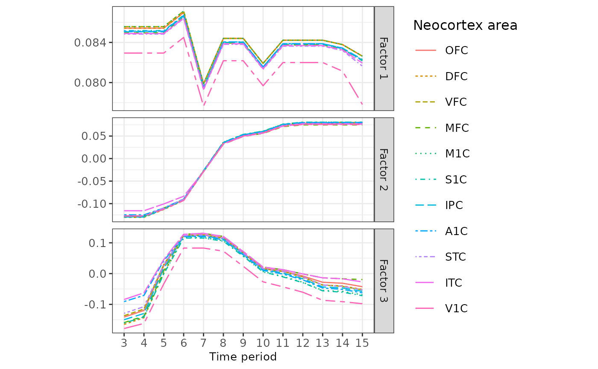
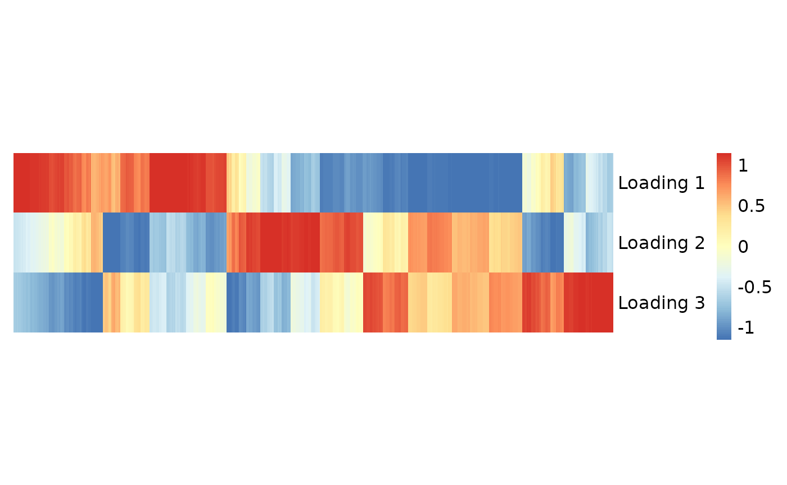

Spatial and temporal dynamics of gene regulation among brain tissues
WANG Zhiwei, HKUST
May 15, 2023
Source:vignettes/neocortex.Rmd
neocortex.Rmd
# library(RhpcBLASctl)
# blas_set_num_threads(32)
# install.packages("devtools")
# devtools::install_github("YangLabHKUST/mfair")
library(mfair)
library(reshape2)
library(ggplot2)
library(scales)
library(pheatmap)
set.seed(20230515)The neocortex dataset
The spatial and temporal patterns of gene regulation during brain
development have attracted a great deal of attention in the neuroscience
community. The availability of gene expression profiles collected from
multiple brain regions and time periods provides an unprecedented chance
to characterize human brain development. Here we select genes with
consistent spatial patterns across individuals using the concept of
differential stability (DS), which is defined as the tendency for a gene
to exhibit reproducible differential expression relationships across
brain structures. We include 2,000 genes with the highest DS and get the
expression matrix, where each row represents a sample
tissue in the nercortex region and each column represents a gene. The
sample_info data frame contains the sample information,
where each row represents a sample tissue and the four columns
respectively represent sample ID, neocortex area, hemisphere, and time
periods.
Fitting the MFAI model
We use the expression matrix as the main data matrix
\(Y\), and the spatial and temporal
information contained in the sample_info data frame as the
auxiliary matrix \(X\). Then we proceed
to fit the MFAI model with top three factors.
# Create MFAIR object
Y <- neocortex$expression
X <- neocortex$sample_info[, c("Region", "Stage")]
mfairObject <- createMFAIR(Y, X, K_max = 3)
#> The main data matrix Y is completely observed!
#> The main data matrix Y has been centered with mean = 7.64309222668172!
# Fit the MFAI model
mfairObject <- fitGreedy(mfairObject,
sf_para = list(tol_stage2 = 1e-6, verbose_loop = FALSE)
)
#> Set K_max = 3!
#> Initialize the parameters of factor 1......
#> After 3 iterations Stage 1 ends!
#> After 18 iterations Stage 2 ends!
#> Factor 1 retained!
#> Initialize the parameters of factor 2......
#> After 3 iterations Stage 1 ends!
#> After 46 iterations Stage 2 ends!
#> Factor 2 retained!
#> Initialize the parameters of factor 3......
#> After 2 iterations Stage 1 ends!
#> After 600 iterations Stage 2 ends!
#> Factor 3 retained!Spatial and temporal dynamics
To gain insights, we visualize the dynamic patterns of the top three factors across different neocortex areas and time periods, represented by \(\{ F_1 (\cdot) , F_2 (\cdot) , F_3 (\cdot) \}\).
region <- c("OFC", "DFC", "VFC", "MFC", "M1C", "S1C", "IPC", "A1C", "STC", "ITC", "V1C")
stage <- c(3:15)
X_new <- data.frame(
Region = factor(rep(region, length(stage)), levels = region),
Stage = rep(stage, each = length(region))
)
FX <- predictFX(mfairObject,
newdata = X_new,
which_factors = c(1:3)
)
# Normalize each factor to have l2-norm equal one
FX <- apply(FX,
MARGIN = 2,
FUN = function(x) {
x / sqrt(sum(x^2))
}
)
FX <- data.frame(X_new, FX)
colnames(FX) <- c("Neocortex area", "Time period", paste("Factor", c(1:3)))
FX[, "Time period"] <- factor(FX[, "Time period"], levels = stage)
head(FX)
#> Neocortex area Time period Factor 1 Factor 2 Factor 3
#> 1 OFC 3 -0.08530621 -0.1275302 0.1373010
#> 2 DFC 3 -0.08530621 -0.1281884 0.1720814
#> 3 VFC 3 -0.08530621 -0.1279504 0.1329457
#> 4 MFC 3 -0.08490720 -0.1272283 0.1652383
#> 5 M1C 3 -0.08530621 -0.1277465 0.1578517
#> 6 S1C 3 -0.08510786 -0.1277465 0.1462684
# Convert the wide table to the long table
FX_long <- melt(
data = FX,
id.vars = c("Neocortex area", "Time period"),
variable.name = "Factor", value.name = "F"
)
head(FX_long)
#> Neocortex area Time period Factor F
#> 1 OFC 3 Factor 1 -0.08530621
#> 2 DFC 3 Factor 1 -0.08530621
#> 3 VFC 3 Factor 1 -0.08530621
#> 4 MFC 3 Factor 1 -0.08490720
#> 5 M1C 3 Factor 1 -0.08530621
#> 6 S1C 3 Factor 1 -0.08510786
# Visualization of F(.)
p <- ggplot(
data = FX_long,
aes(x = `Time period`, y = F, linetype = `Neocortex area`, colour = `Neocortex area`, group = `Neocortex area`)
) +
geom_line(linewidth = 0.5) +
ylab(NULL) +
theme_bw() +
scale_y_continuous(n.breaks = 4) +
theme(
text = element_text(size = 12),
axis.text.y = element_text(size = 10),
axis.title.x = element_text(size = 10, margin = margin(t = 3)),
axis.text.x = element_text(size = 10),
legend.title = element_text(size = 12),
legend.text = element_text(size = 10),
legend.key.size = unit(0.8, "cm"),
legend.key.width = unit(0.8, "cm"),
legend.position = "right",
panel.spacing.y = unit(0.2, "cm"), # Space between panels
aspect.ratio = 0.4
) +
facet_grid(Factor ~ ., scales = "free_y")
p
Gene set enrichment analysis
# Inferred gene factors (corresponding to the W matrix in the MFAI paper)
gene_factors <- mfairObject@W
rownames(gene_factors) <- colnames(mfairObject@Y) # Assign gene symbols
colnames(gene_factors) <- paste("Factor", c(1:3))
head(gene_factors)
#> Factor 1 Factor 2 Factor 3
#> DCUN1D2 0.07856363 0.06006969 0.16380535
#> ARRB1 -0.27132066 0.06770678 -0.12942443
#> PDE1B -0.01294115 0.39845756 0.20161848
#> PDE7B 0.01081660 0.41041139 0.52982200
#> TOX -0.11471109 -0.20478958 0.60887294
#> LOXHD1 0.24888992 0.01732711 -0.03634836
# Heatmap of the inferred gene factors
pheatmap::pheatmap(t(gene_factors),
scale = "column",
clustering_method = "complete",
cluster_row = FALSE, cluster_col = TRUE,
treeheight_row = 0, treeheight_col = 0,
border = FALSE,
show_rownames = TRUE, show_colnames = FALSE,
cellwidth = 0.2, cellheight = 40,
fontsize = 12
)
We first calculated the relative weight of the \(k\)-th factor for the \(m\)-th gene by \(\left| W_{mk} \right| / \sum_{k^{\prime}=1}^{3} \left| W_{mk^{\prime}} \right|\), where \(W_{m \cdot} \in \mathbb{R}^{3 \times 1}\) is the \(m\)-th row of gene factors, and then selected the top 300 weighted genes in each factor to form the gene sets.
# Normalize each factor to have l2-norm equal one
gene_factors <- apply(gene_factors,
MARGIN = 2,
FUN = function(x) {
x / sqrt(sum(x^2))
}
)
# Relative weight
gene_factors <- abs(gene_factors)
gene_factors <- gene_factors / rowSums(gene_factors)
M <- nrow(gene_factors)[1] # Total number of genes M = 2,000
ntop <- M * 0.15 # We use the top 300 weighted genes in each factor to form the gene sets
# Index of top genes
top_gene_idx <- apply(gene_factors,
MARGIN = 2,
FUN = function(x) {
which(rank(-x) <= ntop)
}
)
top_genes <- apply(top_gene_idx,
MARGIN = 2,
FUN = function(x) {
rownames(gene_factors)[x]
}
)
colnames(top_genes) <- paste("Factor", c(1:3))
head(top_genes)
#> Factor 1 Factor 2 Factor 3
#> [1,] "ARRB1" "PDE1B" "AJAP1"
#> [2,] "LOXHD1" "PDE7B" "KCNA3"
#> [3,] "TYRP1" "KCNA2" "ASTN2"
#> [4,] "PRKG1" "PMP22" "EMID1"
#> [5,] "MS4A8B" "GPR155" "GPR52"
#> [6,] "FAM131B" "SMAD2" "SEC24D"Then we can conduct the gene set enrichment analysis based on Gene Ontology for each factor.